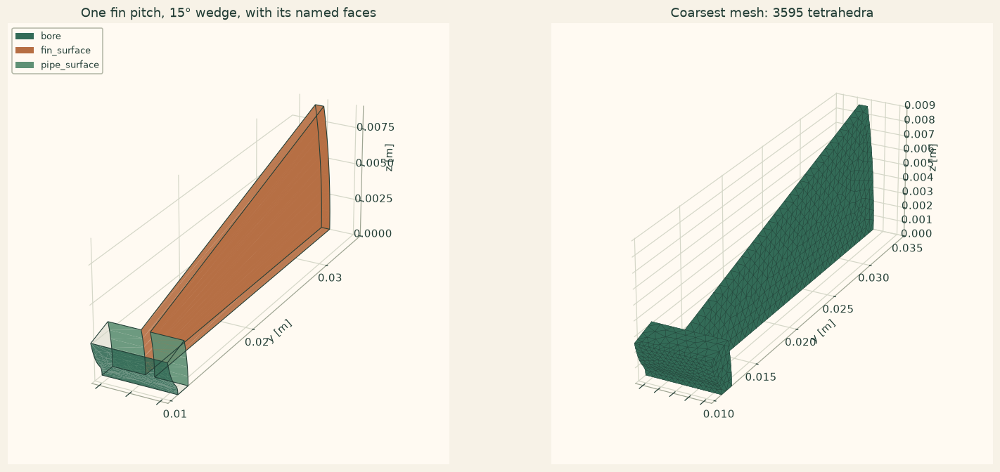

Docs › Examples › Heat transfer through a finned pipe
Heat transfer · 3D
Heat transfer through a finned pipe
A copper pipe with thin disk fins and internal grooves, water inside and air outside, graded against the classical annular-fin efficiency.

What it computes
One periodic fin pitch with the fin, the wall and the grooved bore is read from a STEP file with named faces and meshed with tetrahedra. OneSimulation solves steady 3D heat conduction with quadratic elements and convective boundaries on the water and air sides. The script that builds the STEP file comes with the notebook.
What it checks
The fin efficiency deviates from the Bessel-function solution for annular fins by 0.09 % on the finest of three meshes (0.05 % after Richardson extrapolation), and the heat balance closes to 4e-10.
Geometry
The notebook starts at the import of the CAD file finned_pipe_heat_transfer.step: STEP (AP242), readable by any CAD program, with the names of the faces that the boundary conditions use. Put it next to the notebook.

The geometry script
The script finned_pipe_heat_transfer_geometry.py builds the geometry with the CAD objects of OneSimulation and writes the file. Change a dimension there, run it, and run the notebook again.
"""Geometry of the OneSimulation example "Heat transfer through a finned pipe".
Builds one periodic element of the finned copper pipe with the CAD objects of OneSimulation and
writes finned_pipe_heat_transfer.step: one fin pitch (5 mm) along the pipe axis x and a 15 degree
wedge from a groove ridge to a groove valley. Pipe: 20 mm bore, 2 mm wall, 12 grooves 0.8 mm deep
(a cubic Bezier curve between ridge and valley); fin: 0.6 mm thick, 35 mm outer radius. The file
names the face groups bore, pipe_surface, fin_surface, end_planes and wedge_planes.
"""
import numpy as np
from onesim.cad.d2 import Path, Profile, Segment
from onesim.cad.d3 import Prism, Revolution, UnionFromObjects
mm = 1e-3
bore, wall, fin, fin_thickness, pitch, grooves, depth = (
10 * mm,
12 * mm,
35 * mm,
0.6 * mm,
5 * mm,
12,
0.8 * mm,
)
wedge = np.pi / grooves
at = lambda radius, angle: (radius * np.cos(angle), radius * np.sin(angle))
ridge, valley = at(bore + depth, 0.0), at(bore, wedge)
chord = np.hypot(valley[0] - ridge[0], valley[1] - ridge[1])
groove = Segment(
valley,
control=(
(ridge[0], 0.333 * chord),
(
valley[0] + 0.807 * chord * np.sin(wedge),
valley[1] - 0.807 * chord * np.cos(wedge),
),
),
)
wall_section = Profile(
Path(
ridge,
(
groove,
Segment(at(wall, wedge)),
Segment((wall, 0.0), center=(0.0, 0.0), counterclockwise=False),
Segment(ridge),
),
)
)
fin_section = Profile.polygon(
[
(wall, -fin_thickness / 2),
(fin, -fin_thickness / 2),
(fin, fin_thickness / 2),
(wall, fin_thickness / 2),
]
)
pipe = UnionFromObjects(
objects=[
Prism(
profile=wall_section,
height=pitch,
axis=(1.0, 0.0, 0.0),
origin=(-pitch / 2, 0.0, 0.0),
),
Revolution(profile=fin_section, angle=wedge, axis=(1.0, 0.0, 0.0)),
]
)
radius = lambda face: np.hypot(face.center[1], face.center[2])
across = (
lambda face, x: face.kind == "plane"
and abs(abs(face.normal[0]) - 1) < 1e-9
and abs(abs(face.center[0]) - x) < 1e-9
)
pipe = pipe.grouped(
bore=pipe.select(
faces=lambda face: face.kind != "plane" and radius(face) < wall - 1 * mm
),
pipe_surface=pipe.select(
faces=lambda face: face.kind == "cylinder" and abs(face.radius - wall) < 1e-9
),
fin_surface=pipe.select(
faces=lambda face: across(face, fin_thickness / 2)
or (face.kind == "cylinder" and abs(face.radius - fin) < 1e-9)
),
end_planes=pipe.select(faces=lambda face: across(face, pitch / 2)),
wedge_planes=pipe.select(
faces=lambda face: face.kind == "plane" and abs(face.normal[0]) < 1e-9
),
)
pipe.save("finned_pipe_heat_transfer.step")The notebook
The complete notebook, cell by cell. Run it to produce the figures and the comparison printout.
Warm water flows through a copper pipe, air blows across the outside. Thin annular disk fins enlarge the air-side area, twelve axial grooves the water-side area. The arrangement repeats with the fin pitch and every 30° around the axis, so one fin and a 15° wedge between two mirror planes represent the whole pipe.
This element comes from the CAD file finned_pipe_heat_transfer.step (pipe: 20 mm bore, 2 mm wall, grooves 0.8 mm deep; fin: 0.6 mm thick, 35 mm outer radius, 5 mm pitch); the script finned_pipe_heat_transfer_geometry.py builds it with the CAD objects of OneSimulation and names its face groups. The copper obeys the stationary heat equation \(\nabla\cdot(k\nabla T)=0\) with
| face group | condition | |---|---| | bore | convection to the water, \(-k\,\partial_n T=h_w\,(T-T_w)\) | | fin_surface, pipe_surface | convection to the air, \(-k\,\partial_n T=h_a\,(T-T_a)\) | | end_planes, wedge_planes | no heat flux (periodicity and mirror symmetry) |
Reference. A thin annular fin between the radii \(r_1\) and \(r_2\) follows the fin equation with the Bessel-function solution \(\theta(r)=A\,I_0(mr)+B\,K_0(mr)\), \(m=\sqrt{2h/(kt)}\) (K. A. Gardner, Trans. ASME 67, 1945). With the base temperature fixed and a convective tip it gives the temperature along the fin and the fin efficiency, the heat the fin gives off relative to a fin at base temperature throughout.
import numpy as np
from onesim.cad.d2 import Plane
from onesim.cad.exchange import load
from onesim.materials import IsotropicSolid
from onesim.meshing import LocalRefinement, TetrahedralMesher, with_order
from onesim.numerics import Numerics
from onesim.numerics.fem import FiniteElement, Lagrange
from onesim.numerics.linear import SparseDirect
from onesim.physics.heat_transfer import ConvectiveHeatFlux, HeatConduction, HeatFlux
from onesim.results.comparisons import convergence
from onesim.results.integration import measure
from onesim.simulation import Problem, Simulation
from onesim.visualization import plots, theme
from scipy.special import i0, i1, k0, k1
theme.set()Geometry and mesh
load returns the element with its named face groups. It is meshed with tetrahedra at three cell sizes, half as large at the pipe wall; with_order gives them quadratic edges that follow the round faces.
pipe = load("finned_pipe_heat_transfer.step")
faces = pipe.boundaries
sizes = (0.7e-3, 0.5e-3, 0.35e-3)
meshes = [
with_order(
TetrahedralMesher(
target_size=size,
refinements=(
LocalRefinement(
region=faces.bore | faces.pipe_surface, target_size=size / 2
),
),
).generate(pipe),
2,
)
for size in sizes
]
view = plots.Camera(elevation=25, azimuth=-62)
fig = plots.figure(1, 2, size=(14, 6))
plots.geometry(
pipe,
selection={
"bore": faces.bore,
"fin_surface": faces.fin_surface,
"pipe_surface": faces.pipe_surface,
},
labels=False,
camera=view,
title="One fin pitch, 15° wedge, with its named faces",
ax=fig[0],
)
plots.mesh(
meshes[0],
groups=("all",),
legend=False,
camera=view,
title=f"Coarsest mesh: {meshes[0].cell_count} tetrahedra",
ax=fig[1],
)
plots.show()Model
Water at 30 °C flows at 0.5 m/s (Dittus-Boelter gives the film coefficient), air at 20 °C is taken with 80 W/(m² K).
mm = 1e-3
bore_radius, wall_radius, fin_radius, fin_thickness, grooves = (
10 * mm,
12 * mm,
35 * mm,
0.6 * mm,
12,
)
wedge = np.pi / grooves
water_temperature, air_temperature, air_film = 303.15, 293.15, 80.0
water_film = (
0.023
* (0.5 * 2 * bore_radius / 0.801e-6) ** 0.8
* 5.42**0.4
* 0.615
/ (2 * bore_radius)
)
copper = IsotropicSolid(
density=8933.0,
specific_heat_capacity=385.0,
thermal_conductivity=401.0,
youngs_modulus=110e9,
poisson_ratio=0.34,
thermal_expansion_coefficient=17e-6,
)
model = HeatConduction(domain=pipe.volume, material=copper, heating=0.0)
problem = Problem(
name="Finned pipe periodic element",
geometry=pipe,
physics=(model,),
boundary_conditions=(
ConvectiveHeatFlux(
boundary=faces.bore,
physics=model,
heat_transfer_coefficient=water_film,
ambient_temperature=water_temperature,
),
ConvectiveHeatFlux(
boundary=faces.fin_surface | faces.pipe_surface,
physics=model,
heat_transfer_coefficient=air_film,
ambient_temperature=air_temperature,
),
HeatFlux(
boundary=faces.end_planes | faces.wedge_planes, physics=model, value=0.0
),
),
)
numerics = Numerics(
spatial=FiniteElement(element=Lagrange(order=2)), linear_solver=SparseDirect()
)
fields = [
Simulation(problem=problem, mesh=mesh, numerics=numerics)
.solve_stationary()
.field(model.temperature)
for mesh in meshes
]
field = fields[-1]Results
The fin efficiency is the heat leaving the fin divided by \(h_a A_\mathrm{fin}(T_b-T_a)\), with the base temperature \(T_b\) averaged over the fin root. Heat rates are given for one pitch of the full circumference (24 wedges).
def annular_fin(r1, r2, t, h, k):
"""Efficiency and temperature profile theta(r)/theta_base of an annular fin with a convective tip."""
m = np.sqrt(2 * h / (k * t))
A, B = np.linalg.solve(
[
[i0(m * r1), k0(m * r1)],
[k * m * i1(m * r2) + h * i0(m * r2), -k * m * k1(m * r2) + h * k0(m * r2)],
],
[1.0, 0.0],
)
base_flux = -k * m * (A * i1(m * r1) - B * k1(m * r1))
return base_flux * 2 * np.pi * r1 * t / (
h * (2 * np.pi * (r2**2 - r1**2) + 2 * np.pi * r2 * t)
), lambda r: A * i0(m * r) + B * k0(m * r)
x_root, angle_root = np.meshgrid(
(np.arange(16) + 0.5) / 16 * fin_thickness - fin_thickness / 2,
(np.arange(48) + 0.5) / 48 * wedge,
)
root = np.column_stack(
(
x_root.ravel(),
wall_radius * np.cos(angle_root.ravel()),
wall_radius * np.sin(angle_root.ravel()),
)
)
base_temperature = [float(np.mean(f.evaluate(root))) for f in fields]
efficiency = [
f.boundary_flux(faces.fin_surface)
/ (air_film * measure(f, boundary=faces.fin_surface) * (T - air_temperature))
for f, T in zip(fields, base_temperature)
]
exact_efficiency, fin_profile = annular_fin(
wall_radius, fin_radius, fin_thickness, air_film, copper.thermal_conductivity
)
study = convergence(efficiency, sizes)
heat_water, heat_air = -24 * field.boundary_flux(faces.bore), 24 * field.boundary_flux(
faces.fin_surface | faces.pipe_surface
)
print("cell size [mm] tetrahedra fin efficiency")
for size, mesh, eta in zip(sizes, meshes, efficiency):
print(f"{size / mm:14.2f} {mesh.cell_count:12d} {eta:16.5f}")
print(
f"Richardson estimate {study.extrapolated:.5f} (order {study.order:.2f}), Bessel solution {exact_efficiency:.5f}, "
f"deviation of the finest mesh {100 * (efficiency[-1] / exact_efficiency - 1):+.3f} %"
)
print(
f"heat from the water {heat_water:.5f} W, heat to the air {heat_air:.5f} W, imbalance {abs(heat_water / heat_air - 1):.1e}"
)Figure
The surface temperature of four pitches (completed by the mirror planes and the 12-fold rotation), the section through the fin mid-plane near the grooved bore, the temperature along the fin against the Bessel solution, and the mesh study.
pitch = pipe.size[0]
surface_temperature = np.asarray(
field.sample(along=faces.fin_surface | faces.bore).values
)
limits = (float(surface_temperature.min()), float(surface_temperature.max()))
mirror, repeat = [((0, 0, 1), (0, 0, 0))], [
((1, 0, 0), (x, 0, 0)) for x in (pitch / 2, -pitch / 2, 1.5 * pitch)
]
r_line = np.linspace(wall_radius, fin_radius - 0.05 * mm, 80)
along_fin = {
f"3D model, {np.degrees(angle):.0f}° from a groove ridge": np.column_stack(
(np.zeros_like(r_line), r_line * np.cos(angle), r_line * np.sin(angle))
)
for angle in (0.0, wedge)
}
fig = plots.figure(
layout=[
["surface", "surface", "cut", "fin"],
["surface", "surface", "cut", "study"],
],
size=(17, 6.4),
)
plots.surface(
field,
boundary=faces.fin_surface | faces.pipe_surface | faces.bore,
symmetry={"planes": mirror + repeat, "sector": ((1, 0, 0), grooves)},
limits=limits,
subdivisions=1,
camera=plots.Camera(elevation=25, azimuth=-62, distance=0.85),
label="T [K]",
title="Surface temperature, four pitches",
ax=fig["surface"],
)
plots.section(
field,
plane=Plane(origin=(0.0, 0.0, 0.0), normal=(1.0, 0.0, 0.0)),
symmetry={"planes": mirror, "sector": ((1, 0, 0), grooves)},
subdivisions=3,
contours=12,
limits=limits,
label="T [K]",
title="Fin mid-plane near the grooved bore",
xlimits=(-14 * mm, 14 * mm),
ylimits=(-14 * mm, 14 * mm),
ax=fig["cut"],
)
plots.line(
points={
label: (
r_line[::4] / mm,
(
(np.asarray(field.evaluate(points)).ravel() - air_temperature)
/ (base_temperature[-1] - air_temperature)
)[::4],
)
for label, points in along_fin.items()
},
reference={"Bessel solution": (r_line / mm, fin_profile(r_line))},
xlabel="radius [mm]",
ylabel="(T - T_air) / (T_base - T_air)",
title="Temperature along the fin",
legend="lower left",
ax=fig["fin"],
)
plots.line(
np.array(sizes) / mm,
{"3D model": efficiency},
hlines={"Bessel solution": exact_efficiency},
markers=True,
xlabel="cell size [mm]",
ylabel="fin efficiency",
title="Mesh study",
ax=fig["study"],
)
plots.show()Going further
Halve the fin thickness or double the air-side coefficient and watch the fin efficiency fall: the fin tip then runs colder and adds less. Set the groove depth to zero in finned_pipe_heat_transfer_geometry.py and write the STEP file again to see how much of the total resistance sits on the water side.